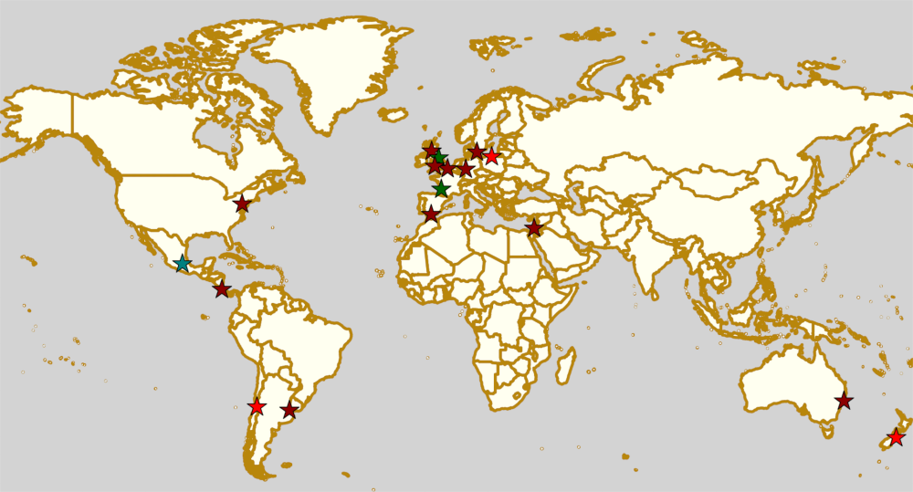

Weekend Highlights: 24 August 2019
This weekend's biggest events are in Mexico, the USA and the UK: Mexico City hosts the second Division 1 Playoffs for the Mexican National tournament, determining who will join Playoff 1 qualifiers Baja Roller Derby, All-Star Juarez and Discordias in the Championships; Sailor City Rollers represent Latin America in the second North American WFTDA Continental Cup this post season; and Riot City Rollers host the first ever Chartist Cup in Wales. Meanwhile, in Scotland, we're raising money to fight cancer with the return of Charity Roller Derby Sevens tournament, Krustfest, for a second year.
The rules are, as usual: highlights limited to 1 event per country, with an "extra" event allowed for a different kind of fixture (so, 1 tournament and 1 bootcamp), or if they involve Scottish leagues (since we are the Scottish Roller Derby Blog). Other notability might also allow the extra event - great posters, notable teams, etc. (League birthdays may count as "special" enough, at our discretion ;) )
We've bent the rules a bit this time, because it's important to highlight derby in regions which need more attention, and because it's quiet enough that we have the space.
In a bid to make this list as useful as possible, we've avoided links to Facebook except where noted. (Links to Teams are to non-Facebook resources - Instagram, or actual team pages - we'd strongly recommend that Teams get themselves an actual webpage [we can help host one if you need help]).
Locations are roughly organised East-West (with things before the weekend out sequence at the start).
Sat: Christchurch, NZ
Dead End Derby host a "Timezone Fundraiser" to support their junior league, the Rolling Dead. This appears to be some kind of sponsored take-over of a local game emporium, with money from tickets to play games going to the league.
Event starts: 1030 Saturday
Venue: Timezone New Zealand, 17 Chalmers Street, Hornby, Christchurch, New Zealand
Sat: Wauchope, NSW, Australia
Port Macquarie Roller Derby host a double header, with the main event being their regular rematch against Outcast Roller Derby.
- Port Macquarie Roller Derby versus Outcast Roller Derby (Bateau Bay)
- Rural NSW Men's versus PMRD/ORD mix.
Event starts: 1200 Saturday (doors open)
Venue: Chophouse, Wauchope Indoor Stadium, Cameron St, Wauchope, NSW, Australia
Sat-Sun: Malmö, Sweden
Crime City Rollers host a very exciting event, as they play Stockholm's finest at home.
- Crime City Rollers (Malmö) versus Stockholm Roller Derby All-Stars
Event starts: 1430 Saturday (doors open)
Venue: Kopparbergsgatan 8, Malmö, Sweden
Sat: Marburg, Germany
Marburg's Splatter Fairies host an exciting double header of German derby.
- Splatter Fairies (Marburg) versus Starlight Excess (Berlin)
- Roller Grrrl Gang (Frankfurt) versus Team Wundertüte ("mixed lucky dip team")
Event starts: 1230 Saturday (doors open)
Venue: Richtsberg-Gesamtschule Marburg, Karlsbaderweg 3, Marburg, Germany
Sat: Calais, France
Roller Derby Calaisis host a Roller Derby Sevens tournament, for 5 teams in one day.
- Teams to be announced.
Event starts: 1300 Saturday (first whistle)
Venue: Calais Beach, Digue Gaston Berthe, Calais, France
Sat: Harrogate, UK
New Wheeled Order host their much anticipated "Infinity Skills Bootcamp", a sort-of-comics-themed? high level one-day skater bootcamp, with coaching by: Fish, Don Gingovanni, Cloud Strike, Optimus Grime, Rosie Peacock, and Shrooms of NWO.
Event starts: 1215 Saturday
Venue: Harrogate Ladies College, Clarence Dr, Harrogate, UK
Sun-Sun: Bordeaux, France
Roller Derby Bordeaux Club host the 2019 edition of their week long bootcamp / social away camp at the Beach. A deliberately relaxed schedule stretches practice and scrimmage across the days, giving ample time for socialisation and relaxation.
Event starts: 1000 Sunday
Venue: Roller Derby Bordeaux club 87 quai des Queyries, Bordeaux, France
Sat: Glasgow, Scotland
Glasgow's ARC hosts the return of Krustfest: a 8 team Roller Derby Sevens tournament, raising funds for against Cancer. This year, the Open-To-All gender teams are all named on the themes of Films and Movies. Teams play two groups of 4, with the winners of each group playing in a final to close the day.
- Teams (Group A)
- Pack to the Future
- The Silence of the Jams
- My Skater Totoro
- Anti-Clockwise Orange
- (Group B)
- Blocky Horror Picture Show
- Hurl Scouts
- Hitty Hitty Bang Bang
- Pivot in Pink
Event starts: 0900 Saturday
Venue: The ARC: Health & Fitness, Glasgow Caledonian University, Glasgow, Scotland
Sat-Sun: Cwmbran, Wales, UK
Riot City Ravens host the first ever edition of The Chartist Cup, named for the hot-bed of Chartist activity in Newport, a full weekend of roller derby, with 40 minute selection games on Saturday, and full-length placement games on the Sunday. (The Chartists were a mid-19th century protest group agitating for reform of politics in the UK; to enfranchise the working class, and reduce what was seen as widespread corruption in the political classes.).
- Teams:
- Riot City Ravens (Newport)
- Rebellion Roller Derby Rebel Uprising (Milton Keynes)
- Tiger Bay Brawlers B-Bombs (Cardiff)
- Hellfire Harlots - Nottingham
- Killa Hurtz Roller Derby (Essex)
- North Wales Roller Derby
- ? Special Guest Teams ?
Event starts: 0900 Saturday
Venue: Cwmbran Stadium, Cwmbran, Wales, UK
Sat-Sun: San José, Costa Rica
Dark Side Roller Derby, in collaboration with Demons On The Track Derby, host an exciting bout of public roller derby in Costa Rica.
- Explosive Skulls (San José) versus Mixed Invitational team
Event starts: 1300 Saturday
Venue: Polideportivo Aranjuez, De la Iglesia Santa Teresita en B°Aranjuez, 300 metros Nortes y 300 metros Oeste, bajando la cuesta., San José, Costa Rica
Sat-Sun: Cuauhtémoc, Mexico City, Mexico
Mexico City Roller Derby and the Asociacion Mexicana de Roller Derby host the 2nd Division 1 Playoffs of this year's Mexican National Tournamenet Series. We've written more about this year's series in our intro article here.
- Teams:
- MCRD - CDMX
- Quimeras - CDMX
- Minervas - Guadalajara
- Rock city - Querétaro
- Aguamalas - Baja California
- Ovejas Negras - Morelia
Event starts: 0800 Saturday
Venue: Rep. de Honduras Esq. Comonfort Col. Centro, Cuauhtémoc, Mexico City, Mexico
Also of interest, due to their attendees:
Fri-Sun: Mannheim, PA, USA
Dutchland Derby Rollers host the second WFTDA Continental Cup this post-season, the "Eastbound Throwdown", of interest to us due to the attendance of Sailor City Rollers, representing Buenos Aires (and, by extension, Argentina).
- Teams:
- Blue Ridge Rollergirls
- Boston Roller Derby
- Columbia Roller Derby
- Detroit Roller Derby
- Gem City Roller Derby
- Madison Roller Derby
- Naptown Roller Derby
- Ohio Roller Derby
- Tampa Roller Derby
- Toronto Roller Derby (Canada)
- Tri-City Roller Derby (Canada)
- Sailor City Rollers (Buenos Aires, Argentina)
Event starts: 0900 Friday (doors open)
Venue: Spooky Nook Sports, 75 Champ Blvd, Mannheim, PA, USA